An educational wargame of cognitive warfare
No shots fired.
Sixteen weeks to win a mind.
Blue and its opponent, Olvana or Donovia, each try to cloud the other's judgment while keeping their own clear. The board is two decision-making systems drawn as star charts. Every dot is a newsroom, a cabinet, a crisis team or a public's trust. Four crises decide who comes out ahead.
No account, no install. Works on any computer with a modern browser. Your progress stays on your own machine.
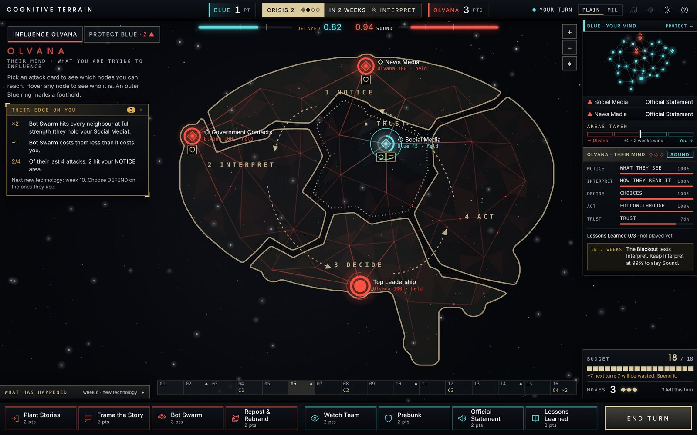
Week 6 of the Typhoon Ines campaign, looking at Olvana's brain.
What's new
- 0.1411 Oct 2026 · browser
- A second opponent: Donovia. Like Olvana, it is a fictional country from the U.S. Army's training environment (DATE), and it plays by its own rules, each drawn from published research by NATO, ISW, IISS and Carnegie: it floods the zone (many attacks in a week slow your decisions), plants premises (its framing lasts longer), hides dormant narratives in your mind that hit twice as hard when switched on, and has a ninth move, Show of Force, that makes your next move cost more but can backfire. It is also predictable and brittle, so prebunking works better against it.
- Four new campaigns, all original fiction: Winter Grid, The Lake Referendum, The Silent Survey Ship and The Vell Valley, a story of annexation.
- Know your opponent. "How Donovia fights" on the start screen explains every rule and its source. Your side panel counts the dormant narratives still hidden in your mind.
- The campaign editor lets you choose Olvana or Donovia. The field manual has two new pages and the new sources.
- Two-player codes work between 0.14 builds.
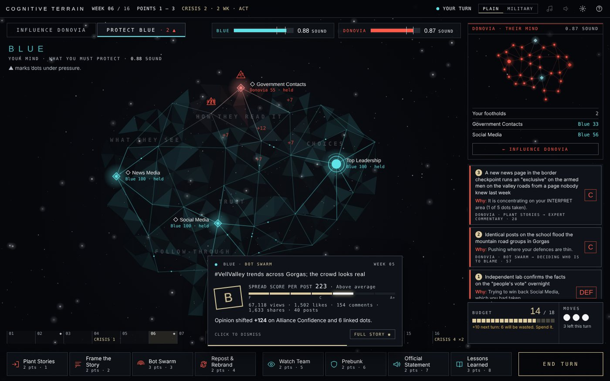
Playing against Donovia 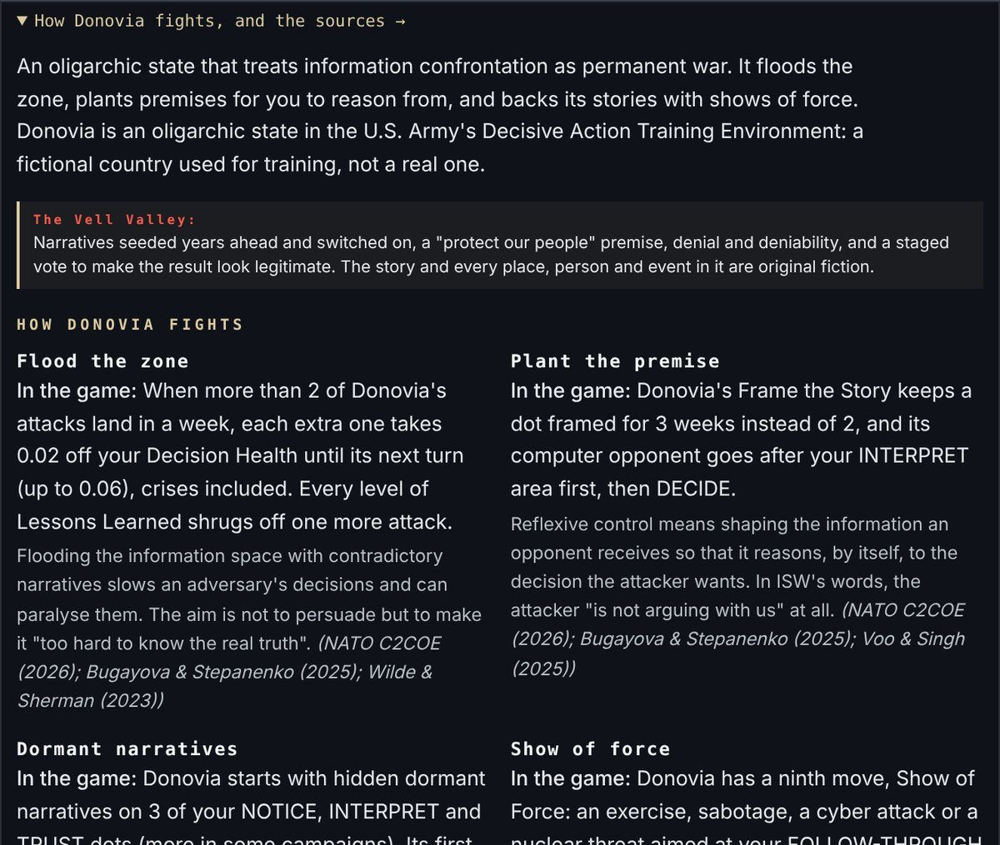
How Donovia fights, with sources 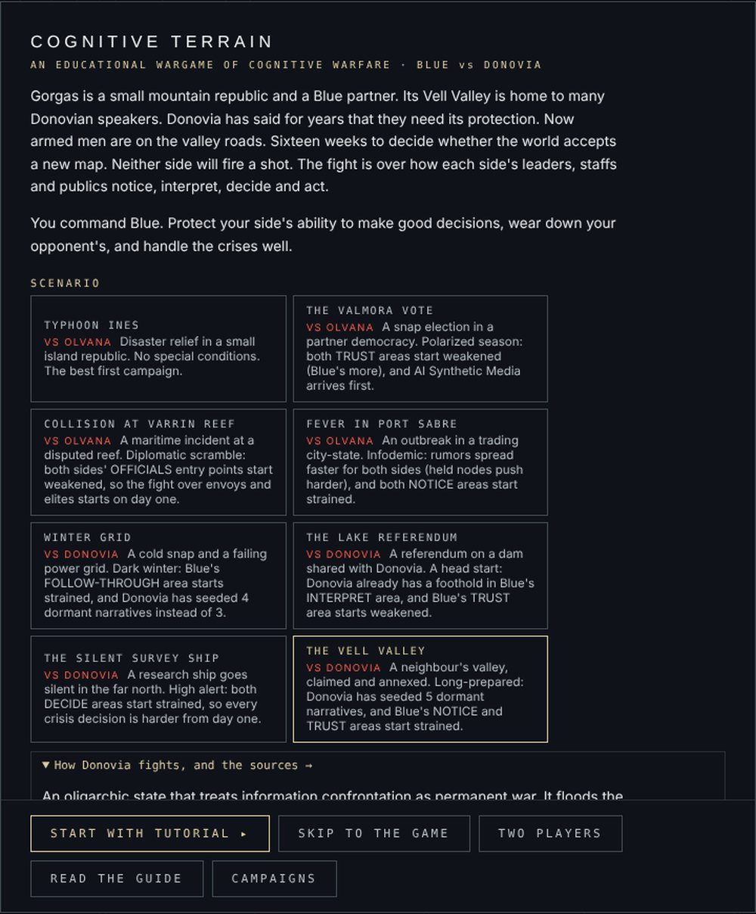
Eight campaigns - 0.13.511 Oct 2026 · browser
- 18 real technologies for your campaigns, past, present and future, all from the game's research: the eleven in Rushing, Umeokolo & Xu (2025), from e-mail in 1971 to AI synthetic media, plus Autonomous AI Agents, AI Vulnerability Mapping, Humanoid Robots, Brain-Computer Interfaces, Neuro-cognitive Weapons, Quantum Computing and Cognitive Biotechnology (from the NATO Chief Scientist, PLA cognitive-warfare and NeuroStrike reports).
- Build your own technology, or change a preset: its name and year, the four attribute scores the research uses (with the total and whether the paper's model would flag it), the moves it boosts, by how much, and its special effects.
- A cleaner campaign editor with tabs, a roomier calendar and a tidier side panel.
- Click any picture on this page to see it full size.
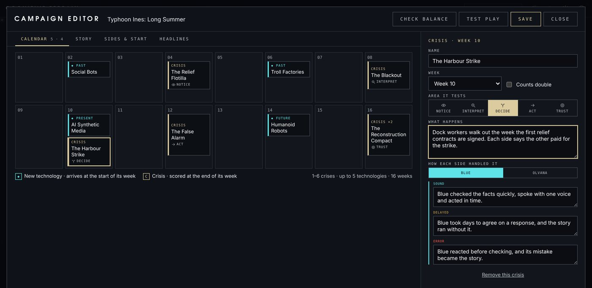
The cleaner campaign editor 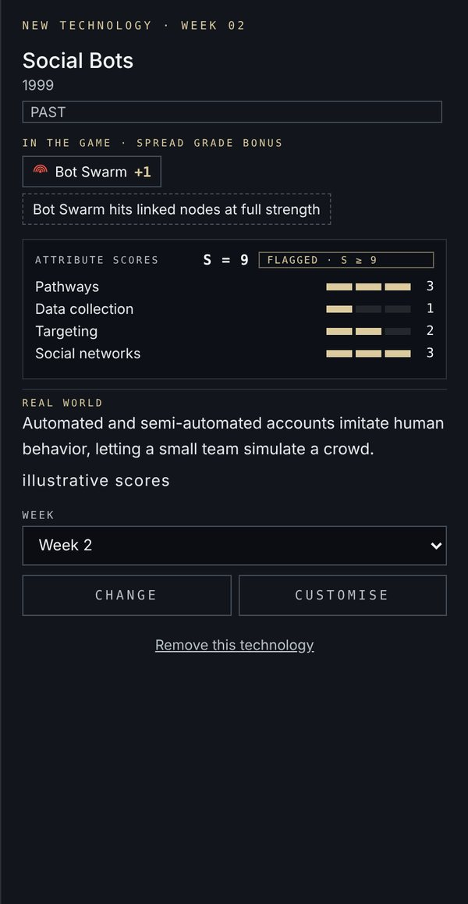
Technology presets 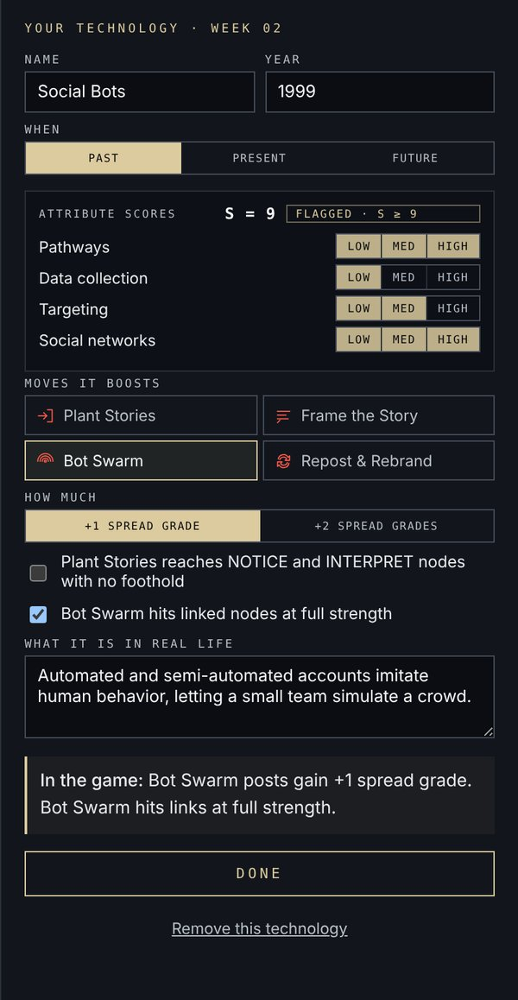
Build your own technology - 0.13.411 Oct 2026 · browser
- Week in review. At the end of every week: both sides' health, your moves and what each achieved, Olvana's moves with the most likely reason, how each part of your mind moved, and what the next crisis needs. SHOW ON MAP lights up the dots that changed. You can switch it off in Settings ⚙.
- See what Olvana does. While Olvana moves, the dot it hit lights up on the map with a number and the rest of the map dims. Each move card says why Olvana probably chose it, and the cards sit over the side panel so they never hide the map.
- Looking ahead. From two weeks before a crisis, the side panel shows how each side would handle it today and where Olvana has been aiming.
- Replay in the debrief. Step or play through the whole campaign: both minds week by week, the moves, the crises and the turning points.
- Campaign editor. Press CAMPAIGNS on the start screen. Make your own campaign or copy a built-in one, place crises and new technologies on the calendar, write the briefing, set how strong each side starts, check its balance and test play it. Share it as a file or a code; import other people's.
- Updated field manual with two new pages: After each week (16) and Make a campaign (21).
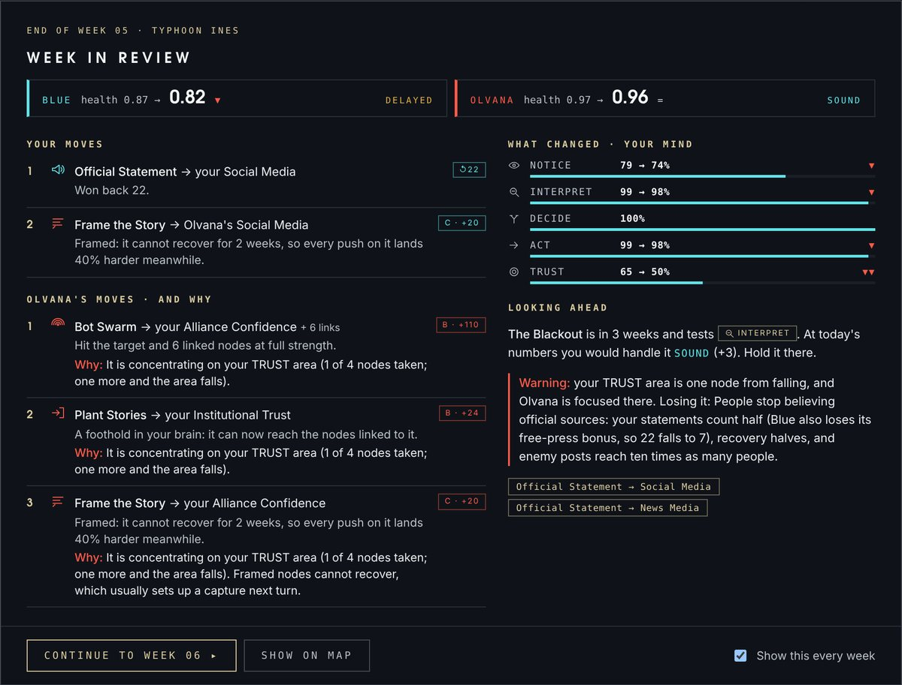
Week in review 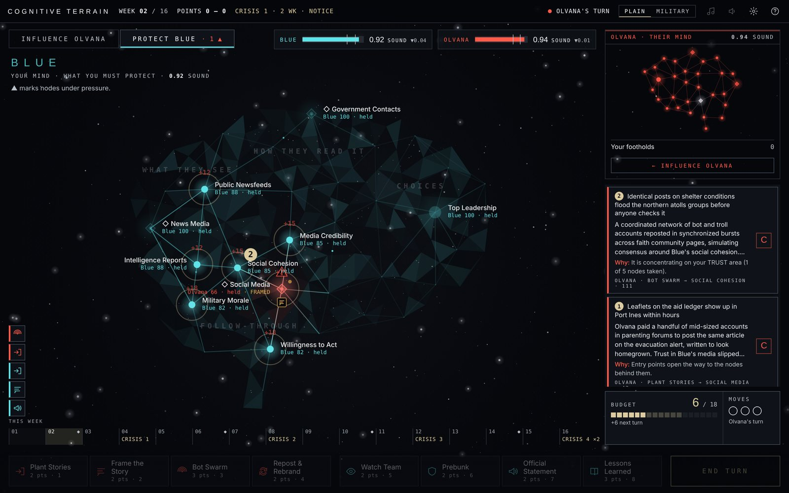
Olvana's moves on the map 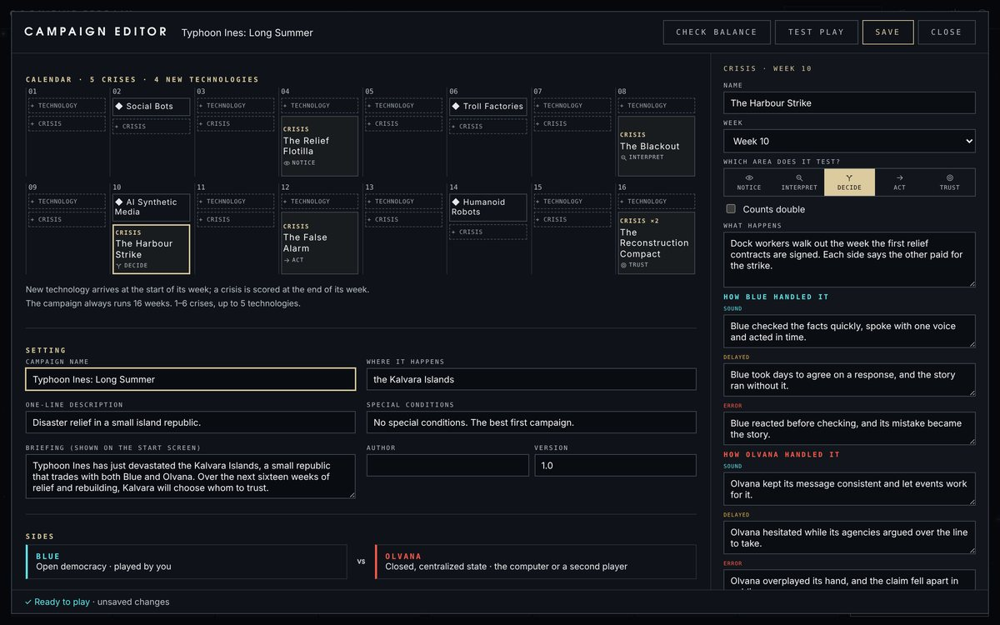
The campaign editor 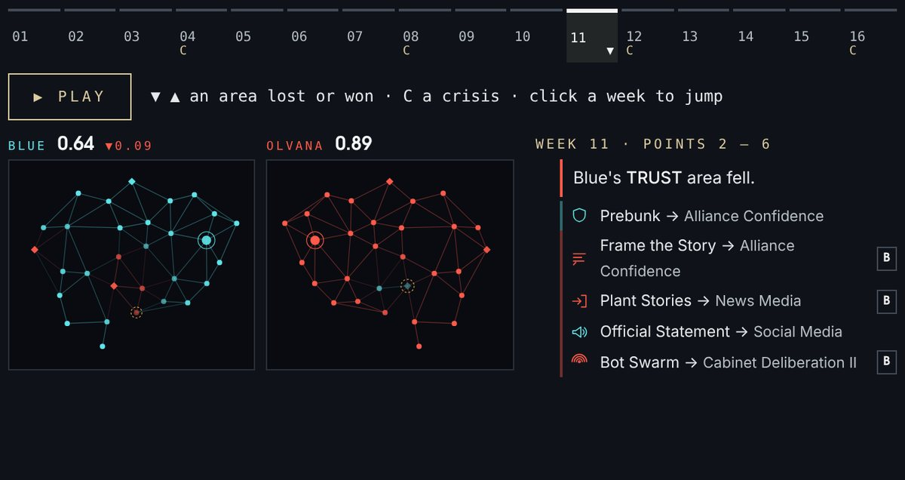
Debrief replay - 0.13.311 Oct 2026 · browser
- Cleaner panels. Hovering a dot now shows a short card: who it is, a tug-of-war bar for who holds it, and the expected result of your move as three big numbers. The longer real-life explanations fold away in the side panel until you want them.
- A readable log. Each move is one row with its card icon, target and result badge; weeks, new technologies and crisis results have their own markers.
- The field manual is now the in-game Guide, page for page: the same magazine pages as the PDF, with a contents rail and page buttons. It works offline and remembers where you were.
- Updated field manual. Every screenshot is retaken from this build; the new PDF is in Downloads.
- Three new music tracks in Settings ⚙: Undertow (a slow echoing arpeggio), Long Telegram (a lone voice over the drone) and Dead Air (radio pings in the night), alongside the original Night Watch.
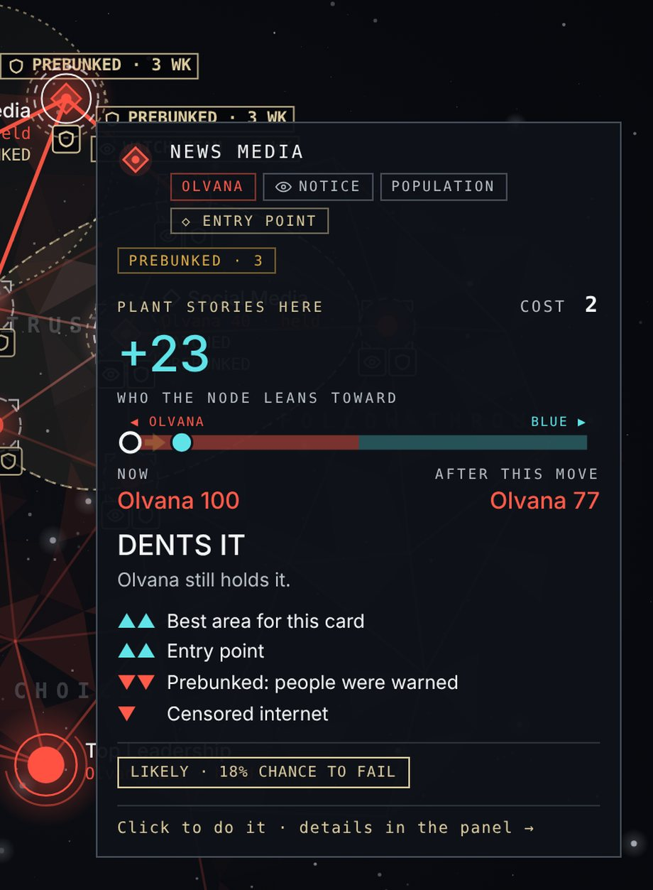
Hover card and side panel 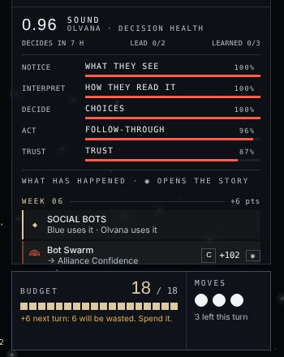
The log 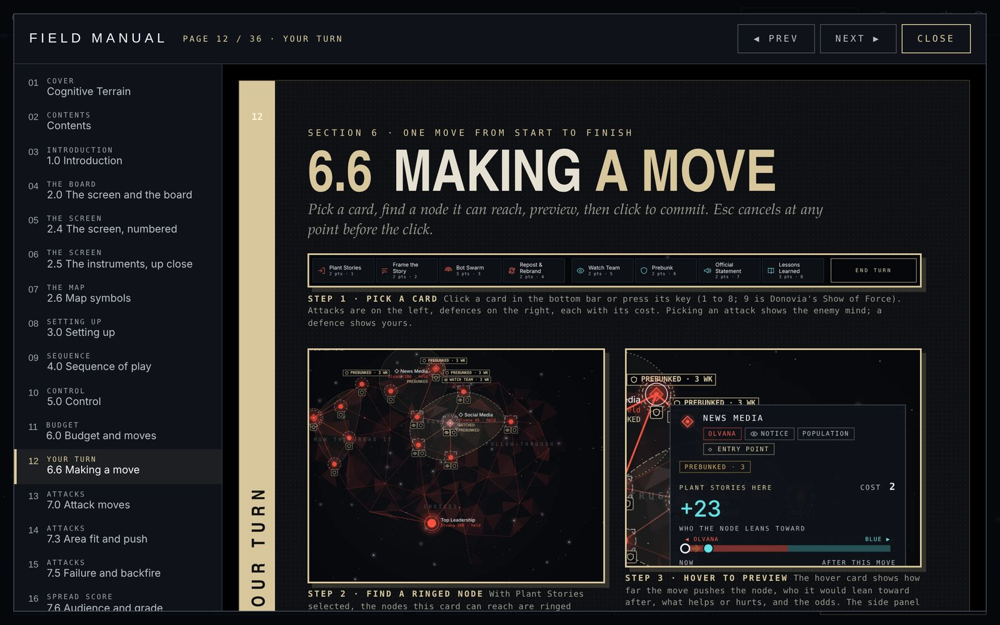
The field manual, inside the game 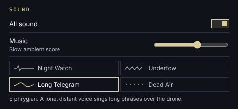
Pick a music track - 0.13.210 Oct 2026 · browser
- Twelve colour schemes in Settings ⚙, all keeping the star chart: Starmap, High Contrast, Dusk and Chart Room (a light paper chart for projectors and bright rooms), plus eight operations-floor schemes: Clear Signal, Narrative, OODA, Resilience, Friction, Grey Zone, Ground Truth and Cognitive Domain.
- Easier-to-read text. The grey text is brighter everywhere; the dimmest text is now more than twice as readable.
- Colour-safe mode and text size work with every scheme.
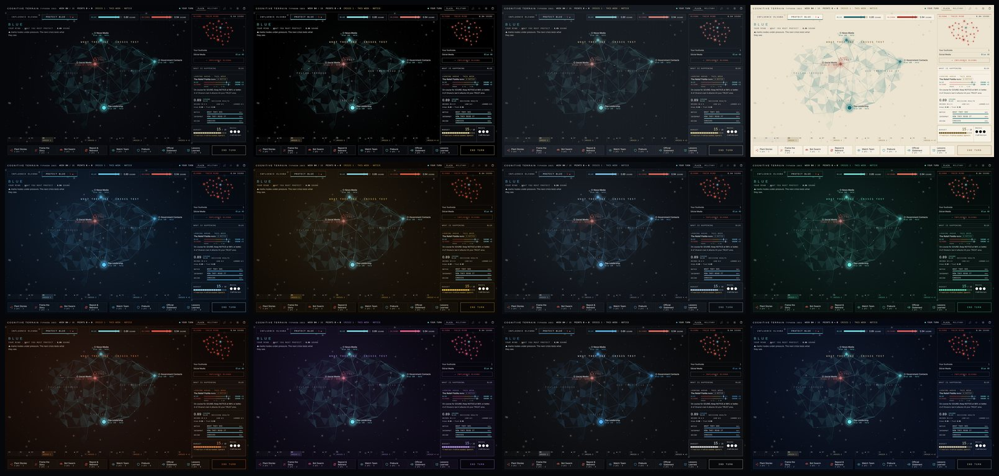
All twelve schemes, same moment in the game
Earlier builds
- 0.13.110 Oct 2026 · browser
- The game fits your screen. On big monitors (1440p, ultrawide, 4K) everything grows instead of shrinking to tiny text; on small laptops nothing overlaps or gets cut off.
- New Interface size setting (Auto, Larger, Largest) in Settings ⚙.
- Card names wrap instead of being cut short, and names on the map no longer print over each other.
- The start screen keeps its Start buttons in view on short screens.
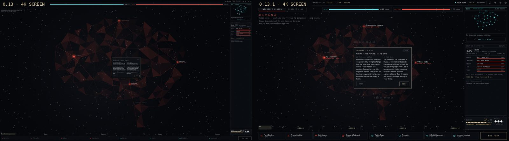
Before and after on a 4K screen - 0.1310 Oct 2026 · all platforms
- Two-player games over copy-and-paste turn codes, with resume.
- A sharper computer Olvana that concentrates on one area at a time.
- Realistic engagement numbers (views, likes, comments, shares) behind each grade.
- Installers for Windows, Mac and Linux, and the illustrated field manual.
What you do
Plant stories, frame the narrative, swarm with bots and rebrand after takedowns to push the other side's dots your way.
Watch for campaigns, prebunk your audiences, correct the record and learn from mistakes before the next crisis tests you.
Crises in weeks 4, 8, 12 and 16 score each side on how well it can still notice, interpret, decide and act.
Who it is for
Professional military education, information operations courses, analysts, students, and anyone curious how influence campaigns work on decisions rather than on poll numbers. Switch between plain language and military terms at any time.
What it is built on
The Multi-Horizon Cognitive OODA framework, the engagement-effectiveness metric and the disruptive-innovation forecast by Rushing, Xu and colleagues; US Army ATP 3-13.1; and open reporting on cognitive operations. Full credits are in the manual and the in-game guide.
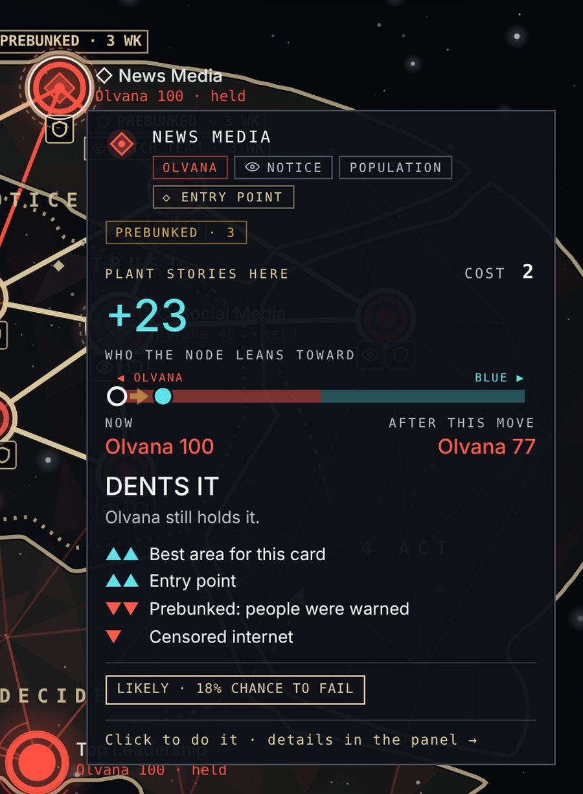
Hover any dot to see who it is and what your move would do there.
Downloads
Browser version 0.14 adds Donovia, a second opponent with its own rules, and four new campaigns. The installers are still 0.13 and do not include Donovia; two-player codes work between 0.14 builds.
| If you want to… | Download | Size |
|---|---|---|
| Play offline on any computer: double-click to open in your browser | cognitive-terrain-0.14.html | 2.9 MB |
| Read the rules: the illustrated field manual | Field Manual (PDF) | 14 MB |
| Install on Windows 10 or 11 (no admin rights needed) | CognitiveTerrain-0.13-Setup.exe | 5.7 MB |
| Install on a Mac with an M-series chip | macOS-AppleSilicon.zip | 2.2 MB |
| Install on an older Intel Mac | macOS-Intel.zip | 2.4 MB |
| Linux | Linux.tar.gz | 2.3 MB |
| Install steps and troubleshooting | PLAYTEST-README.txt | 2 KB |
The installers are not code-signed yet. On Windows choose More info → Run anyway; on a Mac right-click the app and choose Open the first time.
Play against a friend
Two-player games need no server and no account. Each turn ends with a short code you send any way you like: email, chat, Teams, even a file on a USB stick.
- Blue: Two players → New game as Blue, play a turn, press End turn and copy the code.
- Olvana: Two players, paste Blue's code, Join as Olvana.
- Keep swapping codes until week 16. Each player's game saves after every code.
All 0.13.x versions play together. Any mix of browser, HTML file and installers works.
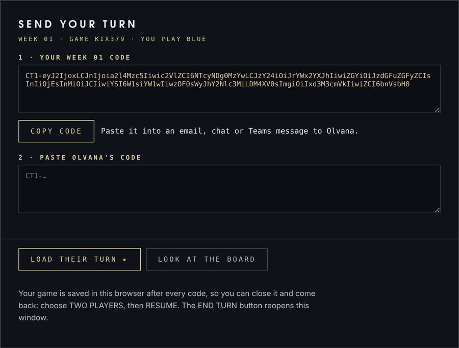
Feedback
This is a playtest. Please note which scenario and difficulty you played, whether you won, anything confusing, and anything that felt repetitive, and send it to whoever shared this page with you.